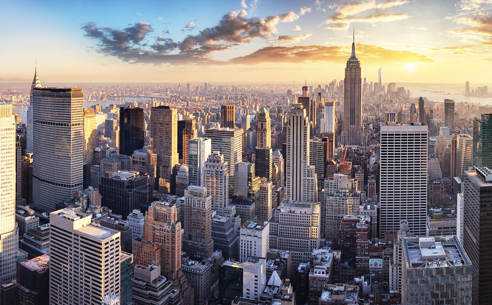

New York City is the most populous city in the United States, with over 19 million people in its metropolitan area. Situated on the Atlantic coast, it is a global center for finance, media, culture, and international diplomacy.
Why New York Qualifies as a City?
NYC is divided into five boroughs—Manhattan, Brooklyn, Queens, The Bronx, and Staten Island—each functioning like its own county. It is one of the world's most densely populated urban areas and is home to the United Nations Headquarters, making it a major global city.
What Advanced Facilities and Infrastructure are Available?
New York's subway system operates 24/7 and includes 472 stations, making it one of the largest rapid transit systems worldwide. The city has three major airports (JFK, LaGuardia, Newark), a vast commuter rail network, and some of the world's most advanced financial systems centered in Wall Street.

New York Fun Facts!
NYC's Empire State Building was once the tallest building in the world. Times Square is nicknamed “The Crossroads of the World” due to its massive digital billboards and constant crowds. Central Park is larger than the entire country of Monaco.